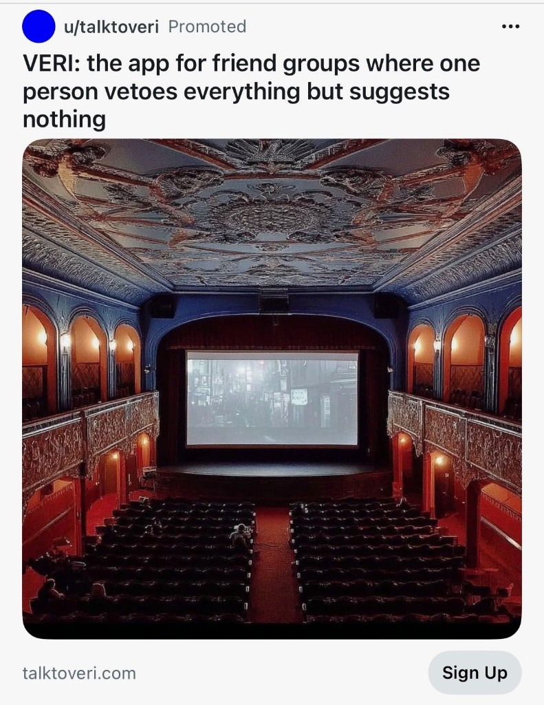

For the film buffs out there: Veri

I’ve recently become enamoured with a new AI chatbot that was a Reddit ad (shocking!). An AI that could provide film recommendations based on my tastes (as surfaced in my Letterboxd profile).
Veri is astonishing and an incredible use of AI. Veri will recommend films to me every night. I engage in conversations with Veri as if chatting with a human. It genuinely feels as if I’m engaging with a fellow film buff, opining on films that I love, and learning about ones that I haven’t seen and ought to consider. It follows up with me wondering if I’ve watched them and asks for my thoughts.
The applications of AI in this fashion have the potential to become transformative, whether it’s books or music or fashion, I feel like I have a trusted advisor (friend?) who knows what I love and can adapt to my tastes as it learns more about me. Whoever created Veri deserves a huge round of applause for creating such a useful app.
Check it out (and become completely engrossed in the interactions) at talktoveri.com.